|

Clique aqui
para visitar o
Acervo de colunas


|
Efeitos especiais na Srie Clssica 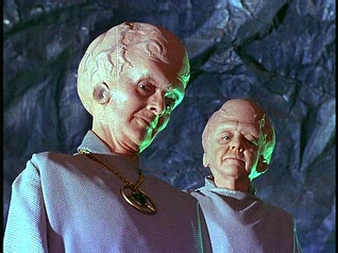 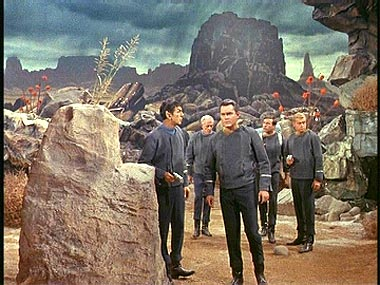 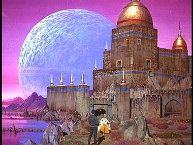 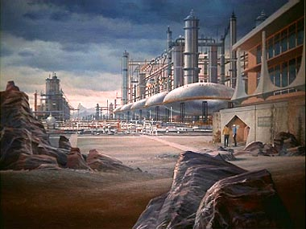 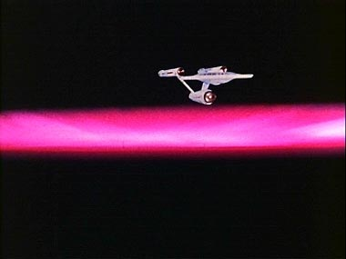 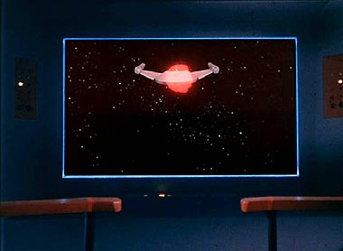 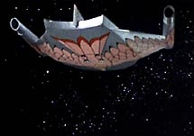 Os efeitos so muito fracos, mas pelo menos temos uma viso de uma nave Romulana. O modelo interessante e, assim, como a Enterprise, trouxe mais um exemplo de design indito no mundo da fico cientfica.The Galileo Seven Foi o primeiro episdio a mostrar uma nave auxiliar. 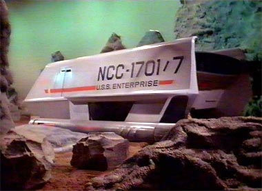 Os efeitos especiais foram simples, porm eficazes. Um bom exemplo a cena em que Spock queima o combustvel da nave auxiliar para deixar um rastro visvel no espao. 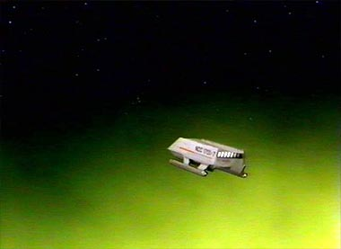 A Taste of Armageddon Esse episdio um timo exemplo do fantstico trabalho no desenho de "matte-paintings". Embora em nenhum momento as imagens da cidade paream realmente pertencer s imagens reais, o mrito aqui reside na criatividade do desenho, ao sugerir uma construo futurista. 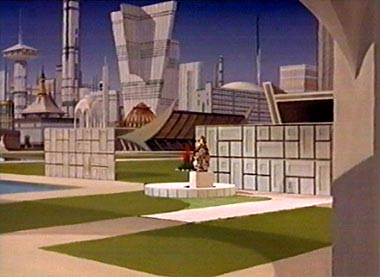 Tomorrow is Yesterday Considerado um dos bons episdios do primeiro ano e, por outro lado, com um dos piores efeitos especiais de toda a srie. Em muitas cenas pode-se ver claramente que partes da Enterprise esto faltando, principalmente nas famosas tomadas "fly-by". 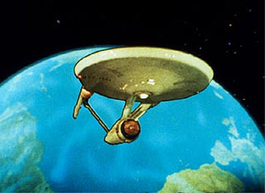 Pior ainda o efeito da Enterprise "sacudindo" no espao enquanto viaja pelo tempo. Esse foi lamentvel. Salva-se o roteiro do episdio e a forma como tratado. The Devil in the Dark um dos melhores episdios da srie e tem alguns efeitos bem eficazes, como a cidade dos mineradores. 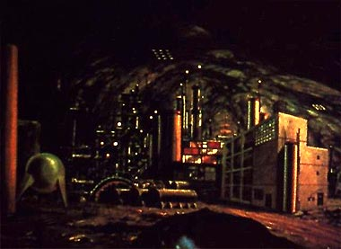 A criatura Horta, por outro lado, mais parece um tapete com fungos e absolutamente risvel. Mas cabe aqui um 'porm' de mxima importncia; foi absolutamente genial a cena em que Spock faz o elo mental Vulcano com a Horta, pois essa cena serviu para dar vida e presena a essa criatura. Ao final do episdio, a audincia simpatiza com ela e ningum mais se importa muito se ela parece ou no um tapete. Sem dvida um dos grandes momentos da srie; nenhum f esquece. Who Mourns for Adonais? 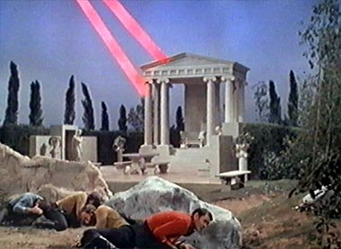 O nico efeito aqui que merece ateno a sobreposio de imagens para dar sensao de escala e resultar no efeito de Adnis parecendo um gigante em frente tripulao da Enterprise. Um efeito eficaz, mas intil, pois no colabora para a histria e s serve para distrair. The Doomsday Machine Os efeitos especiais so um tanto pobres nesse episdio que justamente depende de muitas tomadas no espao, j que se trata de um episdio com batalha espacial. 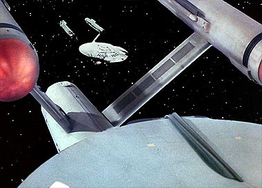 O design de "casquinha de sorvete" da mquina do juzo final no convence ningum, embora ns fs j estejamos mais do que acostumados com ela. 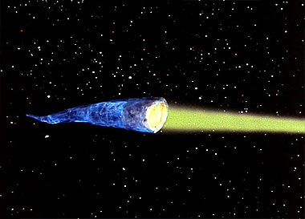 Para as tomadas externas da nave de Decker, classe Constitution assim como a Enterprise, no foi possvel usar o mesmo modelo da Enterprise, pois a nave tinha de estar muito avariada. O modelo que foi construdo para esse episdio tambm sofreu com o baixo oramento e mais parece uma nave de papelo. 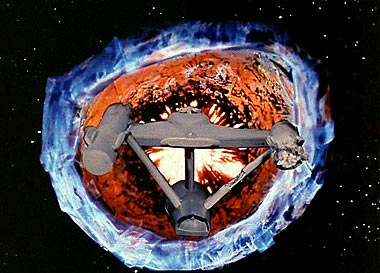 Temos aqui outro caso de um excelente episdio que sofreu de insuficincia de recursos. Mas isso aqui absolutamente perdovel, graas ao fantstico clima do episdio, que mescla suspense, aventura e ao na medida certa. The Immunity Syndrome Um dos melhores episdios do segundo ano e, felizmente, com um dos melhores efeitos especiais da srie. 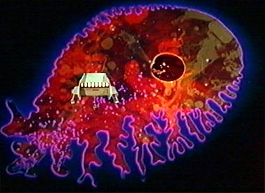 O efeito animado da "ameba" aliengena ficou excelente e at hoje resiste. Ponto positivo para a produo. 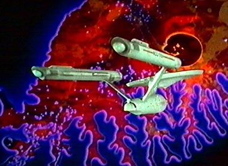 Esse episdio bom exemplo de perfeio dentro dos padres da srie. Possui aventura, ao, humor, suspense e timos efeitos. Elaan of Troyius Esse episdio famoso pelo simples motivo de contar com a primeira apario de uma nave Klingon na srie. 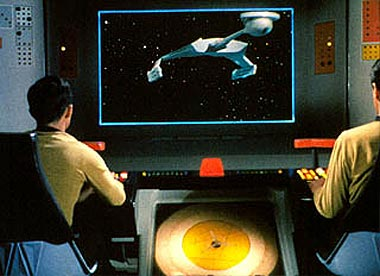 Nunca foi o forte da Srie Clssica mostrar as naves inimigas. Essas naves, na maioria das vezes, eram apenas pontos luminosos na tela da ponte, naves invisveis, modelos mal acabados vistos a muita distncia etc. Por esses motivos foi uma grata surpresa aos fs a apario da nave Klingon. O desenho da nave sensacional e foi mantido nos filmes para o cinema e em alguns episdios das sries posteriores de Jornada, inclusive na nova srie Enterprise. The Enterprise Incident O episdio apresenta uma das mais complexas combinaes de vrios modelos em uma cena, ao mostrar a Enterprise cercada por trs naves Romulanas (com design Klingon, para justificar o gasto da construo do modelo novo para "Elaan of Troyius"). 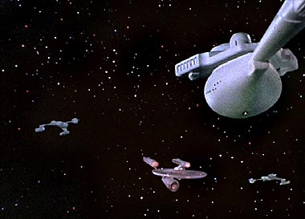 Obviamente, s existia um modelo de nave Klingon, obrigando as trs aparies simultneas a serem feitas pela combinao de imagens diferentes. Sem dvida um belo resultado final. The Tholian Web Estamos no meio do terceiro ano, com pssimos (mas divertidos) episdios, oramento baixssimo e roteiros sem a mnima inspirao. Eis que surge um autntico milagre, na forma de "The Tholian Web". 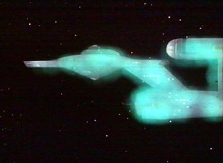 Mesmo no sendo um bom episdio (no sentido estrito da palavra), contou com excelentes efeitos especiais, a primeira (e ltima) apario dos trajes espaciais e a bizarra figura dos seres Tholianos. 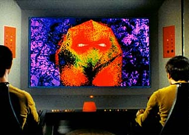 um episdio curioso e bem eficaz, principalmente ao mostrar o atrito entre Spock e McCoy diante da perspectiva de que o Capito Kirk esteja morto. E rendeu a Jornada nas Estrelas seu primeiro Emmy por efeitos visuais. 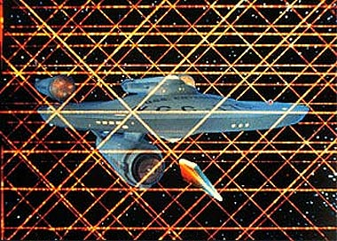 The Empath Curto e grosso: pssimo episdio, tima maquiagem dos aliengenas, talvez a melhor desde os Talosianos em "The Cage". 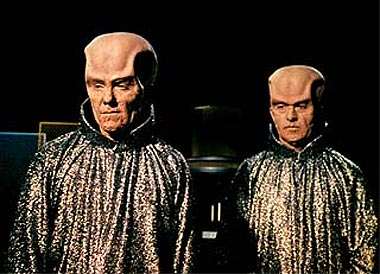 Concluindo: Antes de torcermos o nariz diante desses efeitos, devemos levar em conta sob que circunstncias eles foram criados. Nesse caso temos uma srie de fico que sobreviveu trs anos no ar com oramento menor do que o de um programa de rdio (palavra dos prprios produtores), onde a equipe de produo, trabalhando com o material restrito, triunfou e fracassou diversas vezes no decorrer dos 79 episdios. Era sem dvida um desafio trazer tona esses efeitos especiais e o resultado final, diante de uma mdia, foi absolutamente satisfatrio. Alm do mais, esses (d)efeitos especiais colaboram para o charme da srie e, por pior que possam ser, divertem. Ponto final na questo. Luiz
Felipe do Vale Tavares f de Jornada, DVDs e fico
cientfica e escreve sobre Srie Clssica para o Trek
Brasilis |
 H alguns anos a srie
Deep Space Nine fez uma homenagem Srie Clssica no excelente episdio
"Trials and Tribble-ations". Nesse episdio, Sisko e cia. voltam no tempo e interagem com os personagens da
Srie Clssica em cenas extradas do episdio original
"The Trouble With Tribbles". Para as filmagens desse episdio de
DS9, a equipe de produo construiu modelos da Enterprise original, da estao K-7 e da nave Klingon.
H alguns anos a srie
Deep Space Nine fez uma homenagem Srie Clssica no excelente episdio
"Trials and Tribble-ations". Nesse episdio, Sisko e cia. voltam no tempo e interagem com os personagens da
Srie Clssica em cenas extradas do episdio original
"The Trouble With Tribbles". Para as filmagens desse episdio de
DS9, a equipe de produo construiu modelos da Enterprise original, da estao K-7 e da nave Klingon.